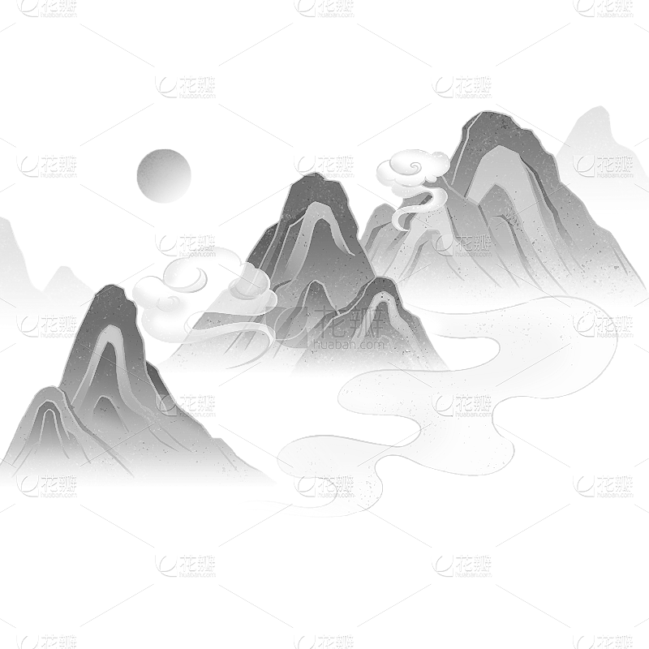

Academic Research Institute Website
A modern, minimalist design blending academic rigor with artistic elegance.
- Devices
- Mobile & Desktop
- Design Tools
- Figma & Adobe Photoshop
- Design Style
- Retro, Minimalist, Academic


Design System
Color
#FAF2E7#E8EDF9#EB5C02#0C1191
Typography
Roboto
Design With Purpose And ClarityForm follows function
Design With Purpose And ClarityForm follows function
Design With Purpose And ClarityForm follows function
DIN
1 2 3 4 5 6 7 8 9 0
1 2 3 4 5 6 7 8 9 0
1 2 3 4 5 6 7 8 9 0
Web Interface Design
More pages for a complete presentation of academic content.


Mobile Interface Design


Academic Research Institute Website